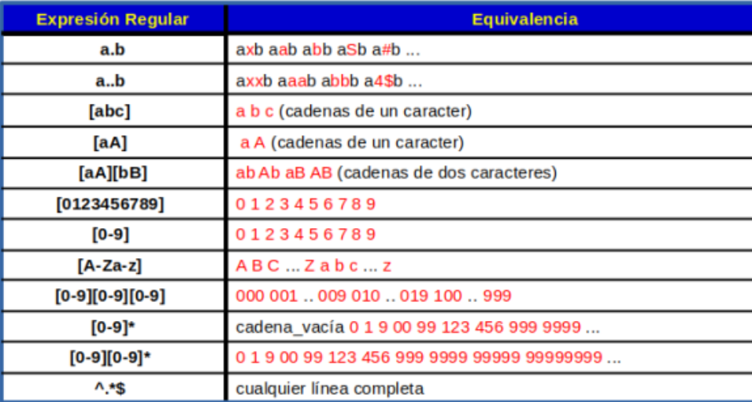

SEGUIR ESTUDIANDO...


Las expresiones regulares, comúnmente abreviadas como regex o regexp, son herramientas fundamentales en informática y procesamiento de texto. Permiten definir patrones de búsqueda y manipulación de cadenas de caracteres de una manera poderosa y flexible. Vamos a explorar más a fondo este concepto y su historia.
Una expresión regular es una secuencia de caracteres que describe un conjunto de cadenas. Pueden contener caracteres
literales (que coinciden exactamente) y metacaracteres (que tienen significados especiales).
Caracteres Literales: Representan a sí mismos en el patrón. Por ejemplo, abc buscará la
secuencia "abc" en el texto.
Metacaracteres: Son caracteres con significados especiales. Por ejemplo, el punto .
coincide con cualquier carácter excepto un salto de línea, el asterisco "*" indica cero o más repeticiones,
y el signo más "+" indica una o más repeticiones.

Clases de Caracteres: Permiten especificar un conjunto de caracteres posibles. Por ejemplo,
"[aeiou]" coincidirá con cualquier vocal.
Agrupaciones y Capturas: Los paréntesis se utilizan para agrupar elementos y crear subexpresiones.
También permiten realizar capturas para extraer información específica de una cadena coincidente.
Anclas: "^" y "$" se utilizan para representar el inicio y el final de una línea, respectivamente.
Búsqueda y Reemplazo: Encontrar y reemplazar patrones específicos en un texto de manera eficiente.
Validación de Datos: Verificar que ciertos datos cumplan con un formato predefinido, como direcciones
de correo electrónico, números de teléfono, etc.
Análisis Léxico: En compiladores, se usan para definir tokens y analizar léxicamente el código fuente.
Las expresiones regulares tienen sus raíces en la década de 1940 y 1950, con los trabajos de Stephen Kleene y
Warren McCulloch, quienes desarrollaron la teoría de autómatas finitos y expresiones regulares.
A lo largo de los años, estas ideas evolucionaron y se incorporaron en diversos campos, desde la teoría
de lenguajes formales hasta la programación de sistemas y aplicaciones.
En 1956, el matemático John Conway introdujo el término "expresión regular" en un sentido más moderno.
Desde entonces, las expresiones regulares se han vuelto omnipresentes en la programación y el
procesamiento de texto, con su inclusión en muchos lenguajes de programación y herramientas de manipulación de texto.